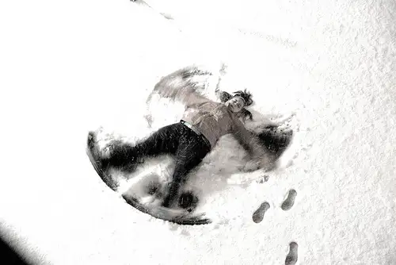

 |
||
| http://www.flickr.com/photos/gusilu/3217745328/sizes/m/in/photostream/ |
Remember snow angels? Lying on the ground in wintertime, brushing arms up and down for the wings, legs out and in for the cloak. You were one with the earth and winter, and by your movement you created something beautiful, heavenly. When done flapping, you may have risen, brushed yourself off, and possibly, realizing you were now covered entirely in cold snow, headed inside for a warm cup of hot chocolate.
I love my memories of creating such a body print in the snow and I love the photo I found online depicting this moment in time. But what I really want to do is share a story of a real-life snow angel who visited me a couple weeks back.
It was my weekly night away from home to work on my writing projects, and I was determined to keep to the schedule, especially knowing school would be letting out the next day and my freedom to meet deadlines would be impeded. “You’re going to get stuck out there,” my husband warned. But I knew my path would be on plowed streets, and likely not far enough from home to pose too great a risk. My determination to get my work accomplished was greater than my worry of winter driving within city limits.
The misstep happened several hours later while on the way home. Thirsty, I decided to take a different route to buy something refreshing at a gas station nearby. Time spent inside, warm and safe, had helped me forget the realities I was facing. Off the beaten, plowed path, I soon made manifest my husband’s predictions, and was surrounded by snow in every direction, unable to move my van. And I knew that at that point in the night, summoning my early-to-bed husband likely would be a futile act.
“Alright God, I guess it’s me and you,” I whispered. “Help?” Though I tried brushing off a rising panic within me, it remained, hovering, and yet my belief that somehow I’d figure a way out of the mess felt even stronger. I paused, uttering one more small prayer, concluding this time with the words, “I trust you.”
Less than a minute later, I watched an almost surreal scene as a large pickup truck about two blocks to my right came to a halt and proceeded to move in reverse, headlights brightly lit as it traveled backward down a nearby side street. Even though it would be logical to believe the driver had seen me and was going to stop and help, I didn’t trust this possibility. I hadn’t even seen the pickup go by, after all, so my mind automatically concluded there was must be some other reason he was driving in reverse the entirety of two blocks.
Minutes later, he’d pulled up to the back of my van and was stepping out, retrieving a large rope from the back of his pickup. He spoke very few words, just got to work connecting our vehicles in a way that would be most likely to help me out of my jam. It didn’t take long — just a few tries and one really good yank…and I was free. No more worries. I could go home and fret not a minute more about my safety and how I might get my vehicle out of a snowbank at night.
The angel was young, maybe late 20s, and didn’t for one moment make me feel as if I’d inconvenienced him. “What’s your name?” I asked, thanking him profusely for his good deed. And then…quickly as he’d come, he was gone.
To some this scene and the resulting action might be perceived as mere coincidence. A woman becomes stuck in the snow, a young man in a truck drives by and, seeing her predicament, decides to stop and help. All just a string of events that can be easily explained in natural terms.
For me, it was much different. So much so that I bawled all the way home; not because I’d messed up and was feeling lucky to have been rescued, though I certainly was grateful beyond words. But because I knew it was not coincidence. The timing of the rescue, it having come so immediately at the conclusion of my prayer, coupled with what I was feeling interiorly and the rapidity by which it all happened helped me to know that in that act of kindness by another human being, God was making contact with me, reminding me He was near and would not leave me feeling helpless for long. The supernatural reality of the situation felt very real, and at the same time, symbolic in a sense of what I was needing, since I was not just needing to be unstuck but some assurance of His love, though I hadn’t recognized this until afterward.
God knows my every weakness, including my need to feel His presence on occasion, and He responded swiftly and directly to my call for help. Yes, I’d messed up a bit, but in this situation, He showed me His mercy, compassion and love. My tears on the way home were much more about the depth of the love I felt, my joy over having been given that gift, and my humility over having been given the eyes of faith than anything else.
God doesn’t always act so promptly. Sometimes the rescue is much more delayed. Sometimes it feels as if God hasn’t responded at all. But He does. He always does. It just might not be in the way we had anticipated, nor exactly the timing we would have chosen. But God will not abandon us.
Q4U: Have you ever felt rescued by an angel, helped out of a jam? When and how?